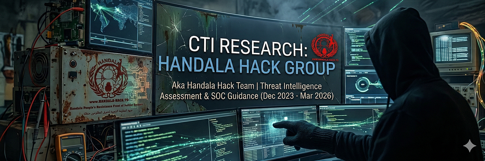
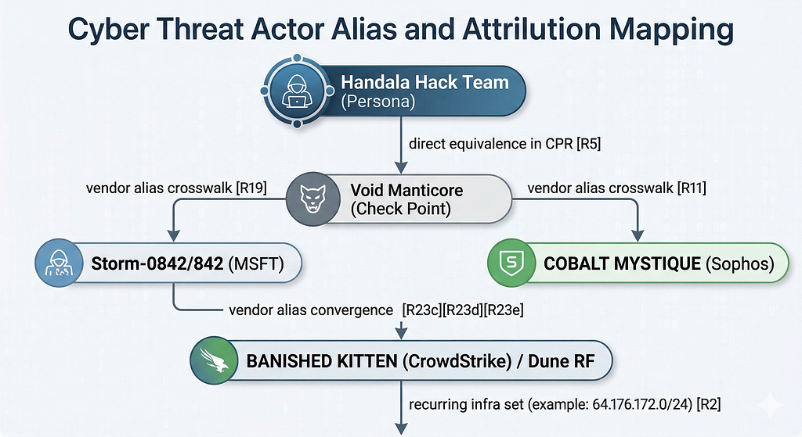
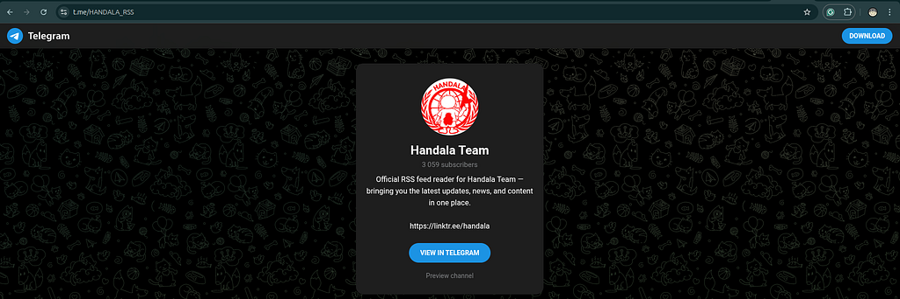
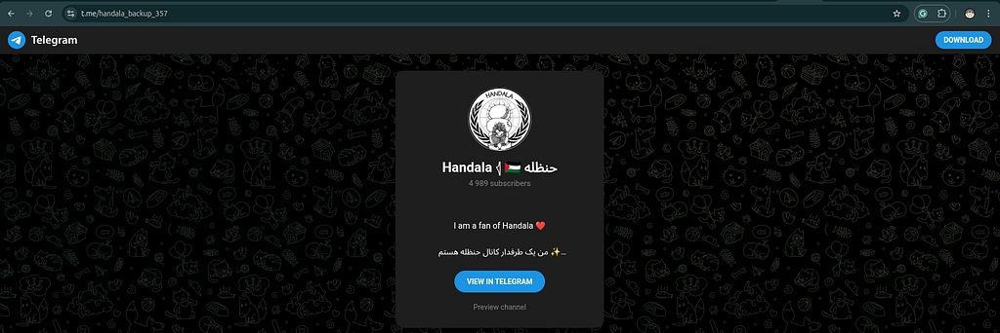
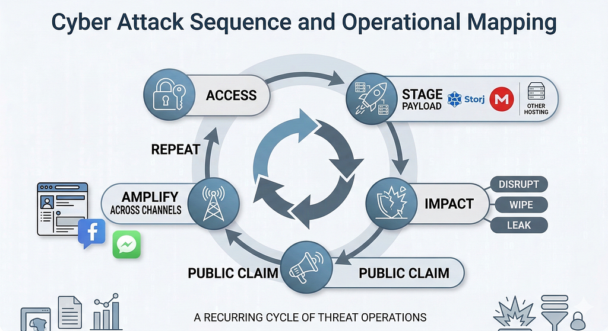
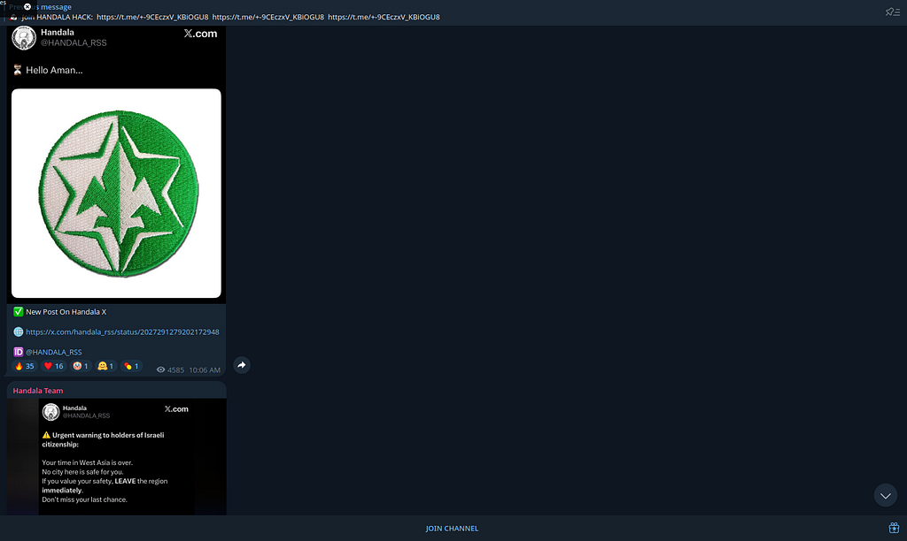
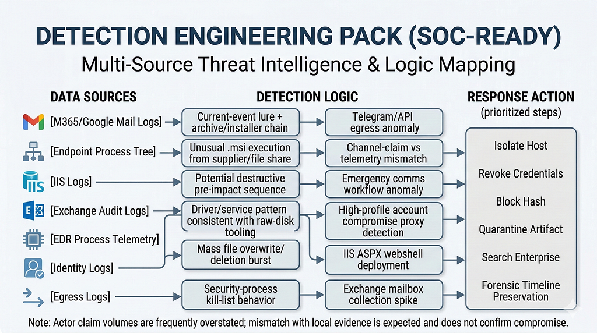
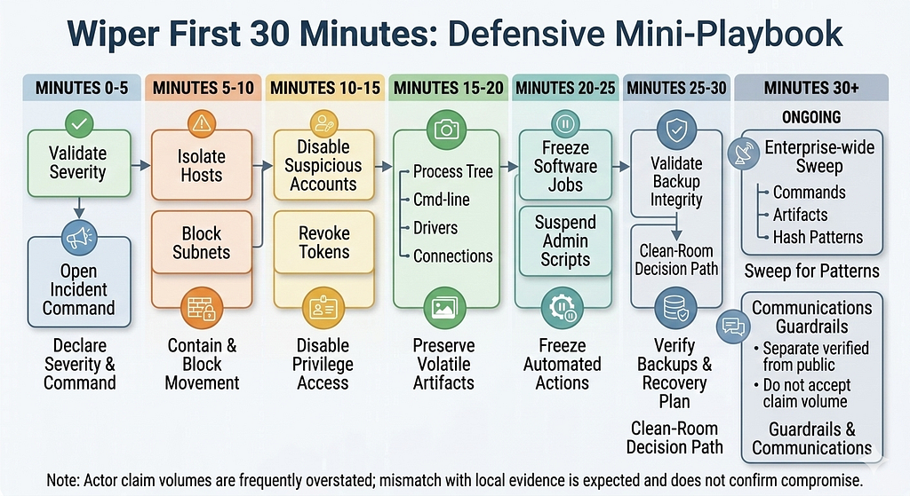
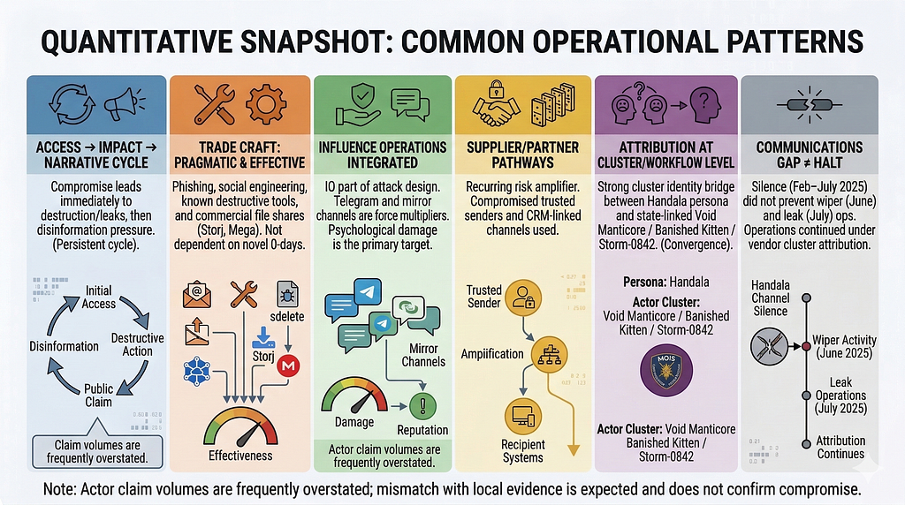

Evidence-Labeled Threat Intelligence Assessment and SOC Defensive Guidance (December 2023–March 2026). Author: Andrey Pautov. Evidence cutoff: March 5, 2026. Original article (Medium).
CTI Research: Handala Hack Group (aka Handala Hack Team)
Evidence-Labeled Threat Intelligence Assessment and SOC Defensive Guidance (December 2023 to March 2026)

Table of Contents
Report Metadata
Evidence cutoff (collection freeze): March 5, 2026 (UTC)
Assessment window: December 2023 to March 2026
Scope: Threat actor profile and defensive implications
Date: March 6, 2026
Author: Andrey Pautov
Methodology & Evidence Labels
Analytic rule: actor claims are treated as collection leads, not confirmation.
Partially corroborated — rule of use: apply only when at least one technical artifact exists (for example: hash, sample, infrastructure indicator, or behavior chain). Press-only narrative coverage without technical artifacts is excluded.
Partially corroborated: used in the Confirmed vs Claimed Matrix only. Denotes events where at least one technical artifact or vendor technical report exists, but full victim-side forensic detail or complete kill-chain confirmation is not publicly available. Epistemically closer to “Reported” than “Observed.”
Claimed: actor-channel or press-amplified claims without sufficient technical corroboration in public artifacts.
Assessed: analytic inference derived from multiple Observed/Reported items; used for synthesis, not as standalone proof.
Reported: described by reputable external reporting (vendor intelligence, government advisories, established press), but not independently re-validated in this report.
What decreases confidence: single-source narratives, circular citation loops, and actor-post claims without technical evidence.
What increases confidence: victim-side telemetry (EDR/SIEM), email traces, malware samples/hashes, sinkhole/passive-DNS corroboration, and independent IR confirmation from affected organizations.
Medium confidence: partial convergence, but either incomplete forensic detail or cluster-level (not incident-level) attribution.
Medium-High confidence: direct primary-source equivalence statements or near-converging technical reporting with minor gaps.
High confidence: converging technical reporting across independent primary sources with artifact-level overlap.
Executive Summary
Handala (also presented as “Handala Hack Team”) is a politically aligned hack-and-leak threat persona whose operations are designed to create both technical disruption and information shock. The group has primarily targeted Israeli organizations, with occasional spillover into regional ecosystems through supply-chain and partner-connected pathways. Their campaign pattern combines intrusion activity, selective data theft, destructive actions, and fast public messaging intended to amplify fear, uncertainty, and reputational pressure.
This actor should be evaluated as an influence-enabled intrusion threat, not only a traditional cybercrime or espionage actor. In practice, the technical compromise is often one component of a broader operation where public claims, timed leaks, and narrative control are used to magnify impact beyond direct system damage. For executive audiences, this means risk should be measured in three dimensions at once: operational downtime, legal/regulatory exposure from data loss, and external trust erosion.
As of the evidence cutoff (March 5, 2026 UTC), open vendor reporting has converged strongly on the identity of Handala Hack with Iranian MOIS-linked cluster Void Manticore (Storm-0842/Storm-842/BANISHED KITTEN/Dune — naming variants across vendors). Attribution confidence has strengthened materially over the assessment window:
Individual incident claims from actor channels still require independent forensic corroboration.
By 2025–2026, five or more independent vendors and government sources converged on strong MOIS-aligned cluster identity assessments.
Early 2024 reporting contained higher uncertainty at operation level.
The observed tradecraft pattern is generally pragmatic rather than novel. Reporting frequently points to phishing, social-engineering lures tied to current events, abuse of trusted sender or supplier channels, staged payload delivery via commercial file-sharing services (Storj, Mega), and wiper-linked impact paths. This suggests Handala does not require cutting-edge zero-day capability in every campaign; instead, it achieves effect through speed, timing, target selection, and rapid transition from initial access to public pressure operations.
From a business risk perspective, organizations with high external visibility, public-service dependency, or concentrated third-party service reliance face disproportionate exposure. Particularly at risk are environments where security update trust workflows are weak,.msi/installer controls are permissive, and incident communications are not prepared for claim-driven campaigns. In these conditions, even a partial compromise can escalate into a strategic incident because narrative impact may outpace technical containment.
Bottom line: Handala should be treated as a persistent regional threat persona where disruption + leak + influence are fused into a single operating concept, with high-confidence cluster-level overlap to MOIS-linked infrastructure in current open reporting. Defenders should prioritize supplier-channel trust controls, phishing hardening for event-themed lures, wiper-resilience (offline recovery), and communications playbooks that separate verified compromise evidence from adversary propaganda.
This report does not independently validate victim compromise and should be read as structured normalization of open-source reporting. Attribution statements are strongest at cluster level and should not be interpreted as exclusive proof for every actor-branded incident.
Alias / Cluster Crosswalk
[Assessed] Cross-vendor naming crosswalks indicate overlap, not identity at every incident level; operator, infrastructure, and campaign boundaries may differ by vendor model. The cluster-level equivalence between Void Manticore, BANISHED KITTEN, Dune, and the Handala Hack persona is directly stated by multiple primary sources and should be treated as high-confidence at the persona/cluster level.
Cluster-confidence anchor: Check Point direct equivalence statementVoid Manticore (Handala Hack)+ cross-vendor naming convergence + recurring infrastructure intersections in reported operations (for example,64.176.172.0/24 set). [R2][R5][R11][R19][R23c][R23d][R23e]
Key Judgments
Business impact is magnified by narrative velocity. Claim and leak messaging can outpace forensic validation, forcing organizations into high-pressure legal, reputational, and executive response cycles before technical scoping is complete. Confidence: Medium. [R9][R12][R16] Evidence: channel activity patterns + media amplification timelines + campaign retrospectives. (Note: confidence is bounded at Medium because evidence consists of observed outputs — channel activity and media amplification — rather than operational planning artifacts or documented actor intent.)
Attribution is strongest at cluster level; incident-level certainty varies. Multiple independent vendors and government sources directly link the Handala Hack persona to MOIS-aligned clusters (Void Manticore / BANISHED KITTEN / Storm-0842 or Storm-842 / Dune naming variants), while actor-channel claims remain unevenly corroborated per incident. Confidence: Medium-High. [R2][R5][R6][R11][R23c][R23d][R23e] Evidence: Check Point Research directly equates Void Manticore with the Handala Hack persona [R5]; CrowdStrike tracks the same cluster as BANISHED KITTEN [R23c]; cross-vendor alias mapping + cluster lineage reporting + multi-vendor convergence context [R2][R11][R19][R23d][R23e], plus recurring infrastructure intersections in reported campaigns (64.176.169.22,64.176.172.101,64.176.172.165,64.176.172.235,64.176.173.77,64.176.172.0/24) [R2]. Confidence is Medium-High (not High) because it covers both cluster-level identity (strong) and incident-level certainty for individual actor-channel claims (variable).
Destructive capability is operationally meaningful, not theoretical. Technical reporting describes wiper-linked behaviors and destructive execution paths across at least six confirmed phases, demonstrating that impact objectives include system denial and data destruction, not only exfiltration/leak activity. Confidence: High. [R1][R2][R5] Evidence: malware and destructive procedure descriptions in technical reporting.
Initial access and delivery are typically pragmatic, not novel. The strongest documented cases show phishing/current-events lures and trusted-channel abuse (including supplier/CRM pathways and commercial file-sharing services), suggesting reliable operator tradecraft without dependence on advanced zero-day capability. Confidence: Medium-High. [R1][R3][R5][R14]Evidence: vendor technical reports and campaign chain documentation.
Targeting emphasizes Israeli entities with civilian-impact leverage and symbolic value. Open reporting spans public and private targets, including incidents involving educational/emergency communication contexts and healthcare infrastructure, consistent with pressure-oriented campaign design. Confidence: High. [R3][R4][R13][R17] Evidence: threat-intel weekly reporting + established press + incident summaries.
Operational doctrine is “disrupt + leak + amplify.” Handala activity repeatedly combines technical intrusion/disruption with rapid public claim dissemination through social/messaging channels, indicating a deliberate information-operations layer rather than incidental publicity. Confidence: High. [R1][R5][R9][R10][R12]. Evidence: vendor technical reporting + OSINT platform activity patterns; actor channels used as supporting context and early-warning feed.
Activity Timeline (2023–2026)

Default evidence handling for this section:
Statements are [Reported] unless explicitly marked [Assessed] or [Claimed].
[Claimed] entries are not treated as confirmation and require independent technical validation.
Post-February 2025 note: Handala’s own public channels (including primary Telegram) went silent after approximately February 9, 2025, before resuming in approximately July 2025. Activity attributed to Handala in the interim and subsequent phases represents researcher/vendor cluster-level attribution (Void Manticore / BANISHED KITTEN) rather than actor self-claims via the group’s own infrastructure. This distinction is noted in relevant phase Claims sections. [R23a][R23b][R23d]
[Reported] This period is the operational backdrop for later Handala-branded activity and explains why attribution is more stable at cluster level than per individual post/claim. [R2][R19]
[Reported] Microsoft and Check Point documented MOIS-linked destructive activity in Israel involving BiBi wiper variants and cooperation patterns between access and destructive operators (Storm-0861 with Storm-0842 in Microsoft naming). [R2][R19]
Persistence (T1505.003): ASPX webshell use (pickers.aspx,error4.aspx,ClientBin.aspx). [R8]
Initial access (T1190): exploitation of public-facing SharePoint (CVE-2019-0604) in related Iran-linked destructive operations. [R8]
TTPs (Assessed)
[Assessed] CVE-2019–0604 is referenced here as lineage context from MOIS-linked historical operations documented in the pre-brand period. It is not assessed as a dominant or universal access vector for 2023–2026 Handala-related incidents. For broader cross-group context, see the Cross-Group Correlation section. [R8]
[Assessed] The access-to-impact handoff model seen later under Handala branding was already operationally established in this lineage period. [R2][R8][R19]
Claims (Unverified)
[Claimed] No phase-specific actor branding claims are central here; this phase is primarily cluster-lineage reporting.
Lineage IOC note: treat these as cluster-lineage indicators, not standalone attribution proof; validate with current telemetry before blocking. [R2][R8]
December 2023 (Public Emergence of Handala Persona)
[Reported] Early messaging already combined target naming and psychological pressure framing. [R1][R9]
[Reported] Trellix places Handala emergence in December 2023, with first X post on December 18, 2023. [R1]
TTPs (Reported)
Information staging: taunting and victim-name publication patterns. [R1][R9]
Persona/channel establishment (T1585.001): rapid setup/use of social and messaging channels. [R1][R9][R10]
TTPs (Assessed)
[Assessed] Communication infrastructure was built as an operational component, not as post-incident publicity. [R1][R9]
Claims (Unverified)
[Claimed] Early breach claims in this phase should be treated as directional until matched with victim telemetry. [R9][R10]
IOC/Hunting Leads
Monitor abrupt actor-branded victim naming bursts in channel timelines. [R1][R9]
[Assessed] Current-events lure timing was used to compress defender decision time and improve execution probability. [R1][R14]
Claims (Unverified)
[Claimed] No major additional claim-only elements dominate this phase relative to technical reporting.
IOC/Hunting Leads
Delivery infrastructure: Storj file share (storjshare.io) used for payload hosting in this campaign. Distinct from Mega file share used in the December 2024–January 2025 CRM-linked campaign.
Artifacts (campaign-reported; enforce by hash/context where possible):update.zip,CrowdStrike.exe,rwdsk.sys,RawDisk3;cl.exe is context-dependent and should be treated as hard only with hash/driver/service corroboration. [R1][R5][R14]
August 2024 (Platform Pressure and Information Friction)
[Reported] ODNI/FBI/CISA issued election-influence statement on August 19, 2024 in the same period context. [R20]
[Reported] The Record documented X account suspension on August 21, 2024 and continuation via other channels. [R12]
TTPs (Reported)
Channel migration/resilience (T1585.001— operational use of alternate channels on both Telegram and X platform): Post-ban activity migrated to@Handala_Backup on X and continued via pre-existing Telegram infrastructure (t.me/HANDALA_RSS,t.me/s/handala_backup_357). These are separate platform assets, not a single unified channel. [R9][R10][R12][R18]

TTPs (Assessed)
[Assessed] Distribution-channel disruption increased friction but did not materially interrupt campaign continuity. [R9][R12][R18]
Claims (Unverified)
[Claimed] Post-ban actor messaging streams remain claim feeds unless corroborated by independent technical evidence. [R10][R18]
IOC/Hunting Leads
Note: The Telegram channels and the X backup account are distinct infrastructure on separate platforms; do not conflate them as a single migration artifact.
X (Twitter) backup account active post-ban:@Handala_Backup[R12]
Telegram channels (active before and after X ban):https://t.me/HANDALA_RSS[R10],https://t.me/s/handala_backup_357[R18]
September–October 2024 (High-Impact Claims Against Strategic Targets)
[Reported] Press and ICT described claims against strategic Israeli targets, including large-volume theft assertions. [R16][R17]
TTPs (Reported)
Strategic victim signaling and coercive narrative framing. [R16][R17]
TTPs (Assessed)
[Assessed] This phase prioritized influence effects and symbolic target selection over publicly validated technical disclosure. [R16][R17]
Claims (Unverified)
[Claimed] Soreq/Shin Bet-adjacent compromise claims and 197GB exfil assertions remain claim-heavy in open sources. [R16][R17]
December 2024–January 2025 (ReutOne Supply-Chain Style Campaign)
[Reported] Check Point retrospective added technical chain detail: recipients were instructed to “back up” their files by downloading a malicious.msi installer hosted on Mega file share, followed by wiper behavior upon execution. [R5]
[Reported] Check Point weekly reporting described Handala claims tied to ReutOne/CRM pathway. [R3]
TTPs (Reported)
Valid Accounts abuse (T1078): compromised supplier/CRM account context used to increase delivery credibility. [R3][R5]
[Assessed] Authenticated business context increased delivery credibility and downstream blast radius risk. Hosting payload on Mega (a legitimate, widely trusted file-sharing service) further reduced recipient suspicion. [R3][R5]
Claims (Unverified)
[Claimed] Cross-country victim-scope claims in this phase require case-by-case forensic confirmation. [R3]
IOC/Hunting Leads
Delivery infrastructure: malicious.msi hosted on Mega file share (mega.nz ormega.io). Monitor for.msi downloads originating from Mega in enterprise egress logs, particularly in combination with supplier/business-context email lures. Distinct from the Storj-based hosting observed in the July 2024 CrowdStrike-lure campaign. [R5]
Hard IOC:6eb7dbf27a25639c7f11c05fd88ea2a301e0ca93d3c3bdee1eb5917fc60a56ff(.msi). [R5]
January 2025 (Kindergarten Siren/PA System Incident)
[Reported] The Record identified Maagar-Tec, an Israeli electronics firm operating panic button systems in schools, as the compromised provider through which the siren activation occurred. The company confirmed it disconnected affected systems and launched an investigation. [R13]
[Reported] Press and weekly TI described panic-button/emergency audio abuse across approximately 20 educational sites and parallel intimidation messaging. [R4][R13][R17]
TTPs (Reported)
⚠️ Caveat: The technical intrusion path for this incident is not fully resolved in public reporting (see Claims section below). The TTPs listed here describe observed operational effects and reported messaging behaviors, not a confirmed kill-chain. Do not treat these as documented attacker procedures without a validated intrusion path.
Emergency communication workflow abuse. [R13][R17]
TTPs (Assessed)
[Assessed] The objective was high-visibility civilian psychological impact with limited need for complex malware tradecraft. [R4][R13]
Claims (Unverified)
[Claimed] Handala claimed to have wiped Maagar-Tec systems following the siren activation; this wiper claim is unverified in public technical reporting and is not counted in the confirmed destructive/wiper phase total.
[Claimed] Exact technical intrusion path and full scope remain partially unresolved in public reporting. [R13][R17]
IOC/Hunting Leads
Vendor/supplier pivot: Maagar-Tec (panic button / PA system vendor) identified as access point; any organizations using this vendor’s systems should validate access logs and system integrity for the January 2025 window. [R13]
February 2025 (Leak and Pressure Operations; Final Self-Claimed Phase)
[Reported] OP Innovate analysis indicates that Handala’s own public channels (including primary Telegram) went silent after approximately February 9, 2025, making this the last phase with confirmed actor self-claims via the group’s own infrastructure. [R23a][R23b]
[Reported] Additional leak campaigns referenced personal-data and weapons-holder data exposure themes. [R15][R16]
TTPs (Reported)
Sustained release cadence across channels. [R9][R16]
[Assessed] Campaign value in this period was primarily reputational and societal pressure amplification. [R9][R16]
Claims (Unverified)
[Claimed] Published leak-scope assertions remain variably corroborated by independent technical reporting. [R15][R16]
IOC/Hunting Leads
Soft IOC: leak-drop waves tied to civilian registry themes. [R15][R16]
June 2025 (Wiper Activity During Iran–Israel Escalation)
[Reported] This phase marks the resumption of Handala/Void Manticore cluster activity following the February–June 2025 communications gap on the group’s own public channels. [R5][R23a][R23b]
[Reported] Check Point Research tracked a Handala Hack wiper event in June 2025, coinciding with the twelve-day Iran–Israel escalation period. This is the only primary-vendor-confirmed destructive technical activity listed for this phase; narrative/influence operations continued in parallel. [R5]
TTPs (Reported)
Destructive execution — wiper deployment (T1485): wiper activity tracked by Check Point Research in the June 2025 escalation window. [R5]
TTPs (Assessed)
[Assessed] Wiper deployment during a high-visibility kinetic escalation window is consistent with the cluster’s established doctrine of synchronizing technical disruption with geopolitical tension peaks. [R5]
Claims (Unverified)
[Assessed] Post-February 2025 Handala attributions represent researcher/vendor cluster-level attribution (Void Manticore / BANISHED KITTEN), not actor self-claims via the group’s own infrastructure. [R23c][R23d]
[Claimed] Specific victim claims and technical details for the June 2025 wiper have not been released publicly by Check Point at the time of this report’s evidence cutoff.
IOC/Hunting Leads
Technical pivot: Check Point Research has confirmed wiper activity in this phase [R5]; consumers should request Check Point private intelligence for campaign-specific artifact details not yet released publicly. Treat the June 2025 window as a confirmed destructive-activity period when scoping retrospective hunt queries.
July 2025 (Hack-and-Leak Against Iran International)
[Reported] RRM Canada documented a Handala/BANISHED KITTEN hack-and-leak operation targeting Iran International, involving data exfiltration affecting five journalists. [R23d][R23f]
TTPs (Reported)
Hack-and-leak with targeted journalist exposure (T1591,T1567.002 pattern). [R23d][R23f]
TTPs (Assessed)
[Assessed] Targeting Iran International — a prominent Persian-language media outlet — is consistent with MOIS operational interests and the cluster’s pattern of combining technical compromise with high-profile narrative pressure. [R23d][R23f]
Claims (Unverified)
[Assessed] Post-February 2025 Handala attributions represent researcher/vendor cluster-level attribution, not actor self-claims via the group’s own infrastructure. [R23c][R23d]
[Claimed] Full scope of data accessed and actor self-claims require forensic validation.
IOC/Hunting Leads
Soft IOC: sudden publication of journalist personal data tied to Persian-language media organizations. [R23d][R23f]
October 2025 (International Airport Claim)
[Reported] Open-source claim tracking reported a Handala/BANISHED KITTEN-associated claim of access to Suvarnabhumi Airport (Bangkok) systems. [R23g]
[Claimed] Airport access claim has not been independently confirmed by technical reporting at evidence cutoff.
IOC/Hunting Leads
Soft IOC: access claims naming international transport infrastructure. [R23g]
November–December 2025 (Bennett Telegram Compromise and “Bibi Gate” Wave)
[Reported] Secondary reporting citing KELA technical analysis of the Bennett/Braverman incident found that the majority of “1,900 chats” cited by the actor consisted of empty contact cards auto-generated by Telegram during phone contact synchronization; fewer than 40 messages with actual content were present. This indicates the actor materially overstated the data scope of the claimed compromise. [R23i][R23j]
[Reported] Israel Hayom/ICT described “Bibi Gate” claim escalation with mixed verified/unverified elements. [R16][R22]
[Reported] JNS stated Bennett office confirmation of Telegram account compromise, without confirmed phone-level compromise. [R21]
TTPs (Reported)
Rapid narrative amplification around elite targets. [R16][R22]
[Assessed] Mixing authentic data with auto-generated Telegram artifacts increases verification burden and extends influence effects even when actual data volume is limited. [R21][R22][R23i][R23j]
[Assessed] Secondary coverage of KELA analysis indicates the actor significantly overstated the data scope of the Bennett account compromise. Treat all claim-volume figures from actor channels as unverified until independently validated. [R23i][R23j]
[Claimed] Several political leak assertions in this period remained under review at publication time. [R16][R22]
IOC/Hunting Leads
Validation note: when actor claims specific data volumes from account compromises, independently verify before treating as confirmed scope. [R23i][R23j]
Account signals: unexpected Telegram sessions/device fingerprints/geolocations for high-profile users. [R21]
February 2026 (Technical Consolidation; Clalit Healthcare Campaign)
[Reported] Handala/BANISHED KITTEN claimed an attack on Clalit, Israel’s largest healthcare organization, in February 2026. [R23h]
[Reported] Check Point retrospective documented likely large-scale phishing, compromised CRM-linked sender path, malicious.msi, and destructive endpoint behavior. [R5]
[Assessed] Healthcare sector targeting (Clalit) is consistent with the cluster’s established pattern of selecting organizations with high civilian-impact leverage and symbolic value. [R23h]
[Assessed] This phase provides one of the strongest public bridges between claim-layer activity and concrete technical procedures. [R5]
[Claimed] Clalit attack scope and technical details remain unverified in public primary-source reporting at evidence cutoff.
IOC/Hunting Leads
Hard IOC:6eb7dbf27a25639c7f11c05fd88ea2a301e0ca93d3c3bdee1eb5917fc60a56ff. [R5]
March 2026 (Regional Escalation and Claimed Cross-Border Activity)
[Reported] Unit 42 (published March 2, 2026) assessed elevated Iran-related cyber risk and included Handala among prominent personas in the operating environment. [R6]
[Claimed] Energy/fuel and cross-border claim streams in this window require strict evidence separation before external confirmation. [R6][R10][R18]
IOC/Hunting Leads
Soft IOC: rapid claim surges naming critical sectors/public figures; correlate with local telemetry windows before attribution decisions. [R6]
Timeline Synthesis
[Assessed] The February–June 2025 communications gap on the group’s own channels did not halt cluster operations; wiper activity (June 2025) and hack-and-leak operations (July 2025) continued under researcher attribution to the Void Manticore / BANISHED KITTEN cluster. [R5][R23a][R23b][R23d][R23f]
[Assessed] This cycle reduces defender decision time and can produce strategic impact even when technical novelty is limited. [R1][R2][R5][R9][R12]
[Assessed] Across 2023–2026, the recurring operational cycle is: opportunistic access → staging → disruptive/destructive or leak action → claim publication → amplification → repeat. [R1][R2][R5][R9][R12]
Operational Model (Text Diagram)
Access → Stage Payload (via Storj / Mega / other commercial hosting) → Impact (Disrupt/Wipe/Leak) → Public Claim → Amplify Across Channels → Repeat

Confirmed vs Claimed Matrix
Public Presence and Information Operations Footprint
[Assessed] Post-February 2025 framing: activity attributed to Handala after approximately February 9, 2025 is primarily vendor/researcher cluster attribution (Void Manticore / BANISHED KITTEN) rather than actor self-published claims. This does not reduce operational risk but affects how confidence should be calibrated for specific incidents. [R23a][R23b][R23c][R23d]
[Assessed] Operational implication: messaging infrastructure is an attack amplifier; channel output should remain unverified until corroborated by local telemetry. [R9][R12]
[Reported] Forum footprint: OSINT reporting references BreachForums-linked persona activity, but forum-origin claims require independent validation. [R9]
[Reported] Social media migration pattern: reported suspension on mainstream platform(s) followed by backup channel usage and renewed message distribution. [R12]
[Reported] Telegram ecosystem: Handala-associated channels are repeatedly cited as primary leak/claim dissemination infrastructure, including both main and backup streams. Active self-claims via own channels through approximately February 9, 2025. [R9][R10][R18][R23a][R23b]

Targeting and Victimology
Observed victim focus in open reporting includes:
[Reported] Critical sectors: escalation-period references to energy/fuel, nationally sensitive institutions, and international aviation. [R6][R16][R17][R23g]
[Reported] Political principals / public figures / media organizations: high-visibility individuals, affiliated communication channels, and Persian-language press (Iran International, July 2025). [R16][R21][R22][R23d][R23f]
[Reported] Supplier and CRM ecosystem: third-party and trusted-sender pathways with downstream victim potential. [R3][R5]
[Reported] Public services / civilian-impact organizations: education, emergency-communications-adjacent environments, healthcare (Clalit, February 2026). [R4][R13][R17][R23h]
Tactics, Techniques, and Procedures (Observed/Reported)
Initial Access and Delivery
[Reported] Commercial file-sharing services used for payload delivery: Storj (July 2024), Mega (December 2024–January 2025).
[Reported] Distribution through trusted or semi-trusted channels (e.g., compromised provider accounts, CRM-linked sender paths).
[Reported] Spearphishing and lure-based delivery (including current-event themed campaigns).
Execution and Operations
[Reported] Wiper-style destructive actions and operational disruption.
[Reported] Use of common administrative and scripting paths.
[Assessed] Campaign framing designed to increase psychological pressure; actor claim volumes frequently overstated relative to confirmed data scope.
[Reported] Emergency communication system abuse (PA/siren systems).
[Reported] Defacement/intimidation messaging to amplify public impact.
[Reported] Data theft plus timed publication (“hack-and-leak”).
ATT&CK-Oriented Mapping (Analyst View)
This table is a consolidated normalization from public reporting. Evidence label per entry matches the label assigned in the originating timeline phase.
Detection and Response Priorities
Egress and API controls- Inspect unusual outbound API traffic from endpoints/servers.-Alert on unexpected outbound traffic to messaging-platform infrastructure and commercial file-sharing services.
Influence-aware incident handling- Separate breach validation from social-media claims.- Prepare communications playbooks for “claim before proof” scenarios.- Apply claim-scope deflation: actor volume assertions are frequently overstated (see Bennett incident secondary coverage citing KELA analysis).
Wiper-impact preparedness- Keep offline immutable backups.- Test restoration regularly under time constraints.- Monitor for mass overwrite/deletion behavior and suspicious service/driver installation.
Supplier/partner trust controls- Enforce zero-trust assumptions for partner-originated updates/messages.- Add verification workflows for urgent “security update” requests.- Prioritize supply-chain exposure mapping for panic-button/PA vendors (Maagar-Tec and functional analogs), including emergency access workflows and delegated admin paths.- Monitor for.msi downloads from commercial file-sharing services (Storj, Mega) in combination with supplier-context email lures.
Phishing resilience for current-event lures- Block newly observed lure themes quickly.- Increase SOC scrutiny during major geopolitical/technology events.
Detection Engineering Pack (SOC-Ready)

Exchange mailbox collection spike- Data sources: Exchange audit logs, PowerShell logs, identity logs.- Logic: anomalous burst of mailbox-search/cmdlet activity (for example,New-MailboxSearch,Get-Recipient) from unusual admin context.- FP notes: planned compliance/eDiscovery operations.- Triage: verify requester, ticket, scope, and time window.- Response: suspend suspicious session, rotate credentials, initiate data-access impact scoping.
IIS ASPX webshell deployment anomaly- Data sources: IIS logs, web-server file integrity monitoring, EDR file/process events.- Logic: new/modified.aspx files in unusual web directories (for example,/scripts/,/images/) combined with webshell-like child process behavior (for example,w3wp.exe spawningcmd.exe/powershell.exe).- FP notes: legitimate web application updates and admin uploads.- Triage: compare against deployment baseline and signed release artifacts.- Response: isolate web node, preserve web root + logs, hunt for lateral movement from web tier.
High-profile account compromise proxy detection (endpoint-first)- Data sources: endpoint telemetry (process/file/network), browser credential/session events, enterprise proxy logs, identity provider signals.- Logic: suspicious token/session artifacts or credential export behavior from endpoint context associated with high-profile users (for example, unexpected Telegram Desktop local database access/copy, abnormal browser cookie/session theft patterns, non-messaging processes initiating Telegram API/domain connections).- FP notes: legitimate client upgrades, profile migration, approved forensic collection.- Triage: validate process ancestry, signer reputation, first-seen prevalence, and user-confirmed activity timeline.- Response: session revocation, credential reset, token invalidation, endpoint isolation if theft patterns are present. Note: actor-claimed chat volume is not a reliable scope proxy without forensic validation.
Emergency communication workflow anomaly- Data sources: OT/system admin logs, telecom/provider logs.- Logic: out-of-schedule siren/PA activation paired with suspicious access/session events.- FP notes: drills and planned tests.- Triage: confirm authorized schedule and operator identity.- Response: fail-safe fallback, credential rotation, incident bridge with facility/security teams.
Channel-claim vs telemetry mismatch alert- Data sources: threat intel monitoring + SIEM.- Logic: actor claim names an organization/system but no matching local compromise indicators appear in expected window.- FP notes: delayed telemetry ingestion.- Triage: verify collection health and time sync.- Response: classify as unverified claim, continue focused hunting. Note: actor claim volumes are frequently overstated; mismatch between claim scope and local evidence is expected and should not itself be treated as confirmation.
Telegram/API egress anomaly from enterprise assets- Data sources: proxy logs, firewall egress, DNS logs.- Logic: new outbound patterns to Telegram/web API endpoints from non-messaging servers/endpoints immediately post execution.- FP notes: legitimate user messaging traffic.- Triage: map destination to host role and recent process ancestry.- Response: temporary egress containment + targeted packet/log retention.
Security-process kill-list behavior- Data sources: process termination logs.- Logic: repeated termination attempts targeting AV/EDR process names in short interval.- FP notes: endpoint security upgrades/removals by IT.- Triage: verify admin actor and approved maintenance.- Response: host isolation and credential reset for initiating context.
Mass file overwrite/deletion burst- Data sources: EDR file telemetry, filesystem events.- Logic: abnormal high-rate writes/renames/deletions across many directories after suspicious installer/script execution.- FP notes: backup agents, bulk migration jobs.- Triage: correlate with signed maintenance windows.- Response: network isolate and preserve forensic timeline.
Driver/service pattern consistent with raw-disk tooling- Data sources: Windows service creation logs, driver-load events.- Logic: creation/loading behavior consistent withrwdsk.sys,RawDisk3, and related destructive chain context.- FP notes: low expected baseline in standard enterprise fleets.- Triage: confirm signer metadata and prevalence.- Response: contain endpoint cluster and trigger destructive-impact playbook.
Potential destructive pre-impact sequence- Data sources: endpoint command-line telemetry.- Logic: command combinations such asvssadmin Delete Shadows,bcdedit /set ... recoveryenabled No,bootstatuspolicy ignoreallfailures.- FP notes: rare but possible admin recovery operations.- Triage: identify initiator account/process ancestry.- Response: isolate host, revoke active credentials, snapshot volatile evidence.
Unusual.msi execution from supplier/business context or commercial file share- Data sources: EDR process telemetry, email metadata, identity logs, proxy/egress logs.- Logic:.msi launched from mail attachment path combined with sender-account anomaly (new geolocation/device/time pattern), OR.msi download from Mega (mega.nz,mega.io) or Storj (storjshare.io) immediately preceding installer execution.- FP notes: approved software rollouts.- Triage: verify change ticket and deployment source.- Response: block hash, suspend suspicious sender account, enforce recipient-side detonation flow.
Current-event lure + archive/installer chain- Data sources: secure email gateway, M365/Google mail logs, endpoint process tree.- Logic: event-themed message → user opens archive/PDF → execution of uncommon installer (.zip/NSIS/.msi) from user temp/download path.- FP notes: internal IT broadcasts during genuine global outages.- Triage: validate sender trust history, attachment lineage, first-seen prevalence.- Response: quarantine artifact, isolate host, search enterprise-wide for same hash/filename.
Wiper First 30 Minutes (Defensive Mini-Playbook)

Begin enterprise-wide sweep for known destructive command and artifact patterns.
Trigger communications guardrails: separate verified impact from public claims; do not accept actor claim volumes at face value.
Validate backup integrity and launch clean-room restore decision path.
Preserve volatile artifacts (process tree, command-line, loaded drivers, active connections).
Disable suspicious privileged accounts/tokens used in preceding 24 hours.
Isolate impacted hosts/subnets; block east-west movement where feasible.
Declare destructive-activity severity and open incident command.
Controls Mapping (NIST CSF-Lite)
Comprehensive IOC Compendium (Public Reporting)
Use this IOC set as a correlation and triage baseline, not as standalone attribution proof. Lineage IOCs (MOIS/Void Manticore context) do not independently prove Handala attribution; validate with current telemetry before blocking. [[R1]](https://www.trellix.com/en-gb/blogs/research/handalas-wiper-targets-israel/) [[R2]](https://research.checkpoint.com/2024/bad-karma-no-justice-void-manticore-destructive-activities-in-israel/) [[R5]](https://research.checkpoint.com/2026/2025-the-untold-stories-of-check-point-research/) [[R8]](https://www.cisa.gov/news-events/cybersecurity-advisories/aa22-264a)
IOC tagging model:evidence_tag—hard(cryptographic/sample-level) ·near-hard(campaign-specific but reusable) ·soft(contextual/behavioral) ·benign-context(legitimate service seen in chain)freshness_tag—stable_tracking(long-lived) ·active_monitor(monitor continuously) ·volatile·maybe_expired(infrastructure likely rotated) ·durable_pattern(behavioral pattern)
Network IOCs (IP/CIDR)
Type: Near-hard · Shelf life: Medium — revalidate against passive DNS and ASN movement · Action: Hunt + conditional block after environment impact validation
64.176.169.22 Evidence:near-hard· Freshness:maybe_expired· Action: Hunt; conditional block after local validation · [[R2]](https://research.checkpoint.com/2024/bad-karma-no-justice-void-manticore-destructive-activities-in-israel/)
64.176.172.235 Evidence:near-hard· Freshness:maybe_expired· Action: Hunt; conditional block after local validation · [[R2]](https://research.checkpoint.com/2024/bad-karma-no-justice-void-manticore-destructive-activities-in-israel/)
64.176.172.165 Evidence:near-hard· Freshness:maybe_expired· Action: Hunt; conditional block after local validation · [[R2]](https://research.checkpoint.com/2024/bad-karma-no-justice-void-manticore-destructive-activities-in-israel/)
64.176.173.77 Evidence:near-hard· Freshness:maybe_expired· Action: Hunt; conditional block after local validation · [[R2]](https://research.checkpoint.com/2024/bad-karma-no-justice-void-manticore-destructive-activities-in-israel/)
64.176.172.101 Evidence:near-hard· Freshness:maybe_expired· Action: Hunt; conditional block after local validation · [[R2]](https://research.checkpoint.com/2024/bad-karma-no-justice-void-manticore-destructive-activities-in-israel/)
64.176.172.0/24(reported range context) Evidence:near-hard· Freshness:maybe_expired· Action: Hunt; conditional block after local validation · [[R2]](https://research.checkpoint.com/2024/bad-karma-no-justice-void-manticore-destructive-activities-in-israel/)
URL and Infrastructure IOCs
Type: Mixed (Near-hard + benign-but-used-in-chain) · Shelf life: Short to medium · Action: Delivery paths — monitor + temporary block + detonation/hunt. Benign/commercial references — hunt-only / behavioral correlation. Never blocklisticanhazip.com ormicrosoft.com in isolation.
Volatile bot token/chat ID indicators (Telegram bot token and chat ID observed in malware workflow) are documented in Appendix B only. See Appendix B for handling guidance, redaction recommendations, and distribution-risk notes before sharing beyond TLP:WHITE scope.
File, Service, and Artifact IOCs
Type: Mixed (Hard + Near-hard) · Shelf life: Medium · Action: Hunt + block where validated; keep lineage tagging in SIEM
Careol.zip(variant spelling as appearing in Trellix report text) Evidence:near-hard· Freshness:maybe_expired· Action: Hunt + detonation + quarantine if re-observed · [[R1]](https://www.trellix.com/en-gb/blogs/research/handalas-wiper-targets-israel/)
Carrol.zip(alternate spelling in same report; treat as same artifact — possible OCR/transcription variant) Evidence:near-hard· Freshness:maybe_expired· Action: Hunt + detonation + quarantine if re-observed · [[R1]](https://www.trellix.com/en-gb/blogs/research/handalas-wiper-targets-israel/)
Type: Hard IOC · Shelf life: Long for sample tracking; medium for blocking efficacy · Action: Block + retro-hunt + sandbox triage · All hashes normalized to lowercase.
Actor claim volumes are frequently overstated relative to confirmed data scope; do not use claimed exfiltration size as a proxy for confirmed impact.
Revalidate all network indicators against current blocklists and passive-DNS before production blocking.
Treat channel/claim-only indicators as soft IOCs until telemetry confirms compromise.
Prioritize multi-signal correlation — IOC hit + behavior + campaign context — instead of one-indicator decisions.
Overall Statistics, Common Patterns, and Cross-Group Correlation
Quantitative Snapshot

Common Operational Patterns
[Assessed] Communications gap ≠ operational halt. The silence of Handala’s own public channels from approximately February 9 to July 2025 did not prevent cluster operations; wiper activity (June 2025) and hack-and-leak operations (July 2025) continued under vendor cluster attribution. [R5][R23a][R23b][R23d][R23f]
[Assessed] Attribution is strongest at cluster/workflow level. Multiple independent primary sources (Check Point, CrowdStrike, Microsoft, Sophos, Recorded Future) converge on strong cluster-level identity between the Handala Hack persona and MOIS-linked Void Manticore / BANISHED KITTEN / Storm-0842 cluster. [R2][R5][R11][R19][R23c][R23d][R23e]
[Assessed] Supplier/partner pathways are a recurring risk amplifier. Compromised trusted senders and CRM-linked channels are repeatedly highlighted in 2025 reporting. [R3][R5]
[Assessed] Influence operations are not a side effect; they are part of the attack design. Telegram and mirror channels function as force multipliers for reputational and psychological damage. Actor claim volumes are frequently overstated. [R9][R10][R12][R16][R23i][R23j]
[Assessed] Tradecraft is operationally effective but technically pragmatic. Public reporting points to phishing, social engineering, webshell lineage, known destructive utilities, and commercial file-sharing infrastructure (Storj, Mega) rather than dependency on novel 0-days in every campaign. [R1][R5][R8][R9]
[Assessed] Access → impact → narrative cycle is persistent. Handala-linked operations repeatedly progress from initial compromise into destructive or leak action, then immediately into public claim/disinformation pressure. [R1][R2][R5][R9]

Confidence and Gaps
Confidence
Low: Specific operational claims posted by actor channels without independent forensic corroboration. Per methodology: claim-led, single-source, no independent technical corroboration; confidence floor is “Low.”
Medium-High: Individual incident attribution for post-February 2025 activity — attributions are researcher/vendor cluster-level and do not represent actor self-claims.
High (cluster level): Multiple independent primary sources (Check Point, CrowdStrike, Sophos, Microsoft, Recorded Future) directly link the Handala Hack persona to the Void Manticore / BANISHED KITTEN / Storm-0842 MOIS-aligned cluster.
High: Handala has conducted repeated disruptive, destructive, and influence-oriented campaigns against Israeli targets across at least six confirmed wiper-phase events and multiple hack-and-leak operations.
Gaps
June 2025 wiper artifacts: Campaign-specific artifact details for the June 2025 wiper event have not been publicly released by Check Point at evidence cutoff. [R5]
Actor claim-volume reliability: Secondary reporting citing KELA analysis of the December 2025 Bennett incident demonstrated that the actor materially overstated data scope (claimed 1,900 chats; fewer than 40 contained real messages). This pattern likely applies across other claim-volume assertions in the dataset. [R23i][R23j]
Operational interpretation of the gap: current evidence supports a working hypothesis of pause/reduction in influence-channel output rather than pause in intrusion capability. The June 2025 wiper event during the channel-silence window supports continuity of intrusion operations despite communications disruption or tradecraft shift. [R5][R23a][R23b][R23d]
Post-February 2025 communications gap: Handala’s own public channels went silent after approximately February 9, 2025, before resuming in approximately July 2025. Activity attributed to Handala in the interim (June 2025 wiper) and subsequent phases represents researcher/vendor cluster-level attribution (Void Manticore / BANISHED KITTEN) rather than actor self-claims. Consumers should distinguish between cluster-level attribution by researchers and actor self-claimed operations when assessing post-February 2025 incidents. [R23a][R23b][R23d]
Multi-actor overlap in the same theater complicates precise operation-level attribution.
Public reporting remains uneven on confirmed victim impact in several high-profile claims.
Practical Defensive Actions (Next 30 Days)
Train comms + legal + SOC on claim-driven influence operations; establish a claim-scope deflation process before any public statement.
Expand monitoring for destructive pre-encryption behavior.
Deploy and test a wiper-specific IR playbook.
Add emergency controls for unsigned or unusual.msi execution, including downloads from commercial file-sharing services (Mega, Storj).
Run a focused supplier-risk review for CRM/IT service dependencies.
References
Evidence handling note: No direct public URL to a standalone KELA primary technical write-up for the Bennett/Braverman scope finding was located at evidence cutoff. KELA-dependent statements in this report are therefore treated as secondary-reported (Reported), notObserved.
[R23f] Iran International, reporting on Handala/BANISHED KITTEN operation against journalists (Persian-language source cited by RRM Canada). Published: July 8, 2025. Accessed: March 5, 2026. https://www.iranintl.com/202507086458
[R18] Telegram backup stream (monitoring lead). Accessed: March 5, 2026. Note: Volatile source; content can change; use as monitoring lead only. https://t.me/s/handala_backup_357
Editorial note: Paywalled; used as contextual reference for the February 2025 leak/pressure operations phase. Specific claim supported: reporting on personal-data and weapons-holder data exposure themes attributed to Iran-linked actors. No unique technical artifacts or IOCs are sourced exclusively from this reference.
Note: COBALT MYSTIQUE is used here as a public alias-crosswalk anchor in relation to Void Manticore (Check Point naming) and Storm-0842 (Microsoft naming).
[R10] Telegram channel (monitoring lead). Accessed: March 5, 2026. Note: Volatile source; content can change; use as monitoring lead only. https://t.me/HANDALA_RSS
Editorial note — References with unconfirmed publication dates: One reference used in this report lacks a confirmed publication date: [R21] (JNS, date not available in public metadata). Claims sourced from this reference carry uncertain temporal anchoring and should be treated as accessed-date-only.